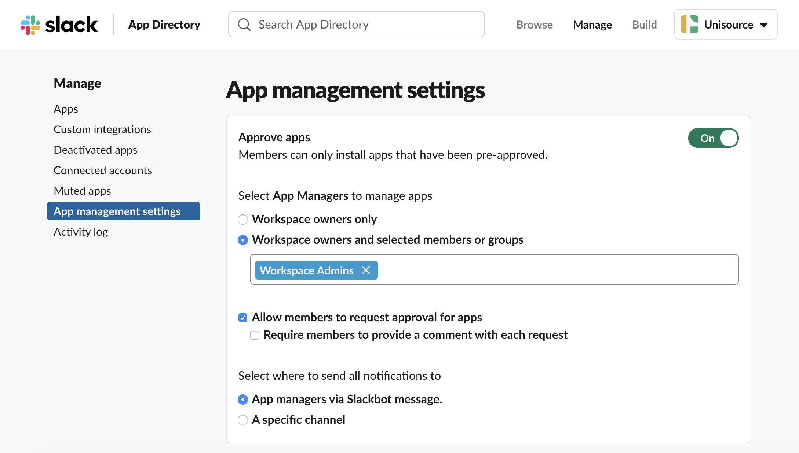
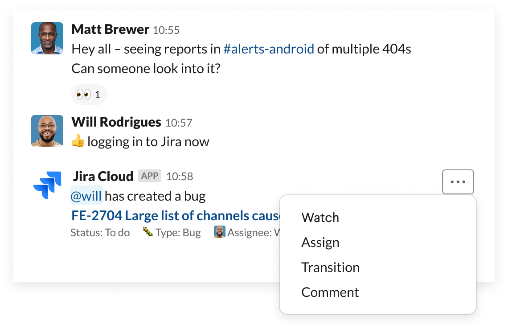
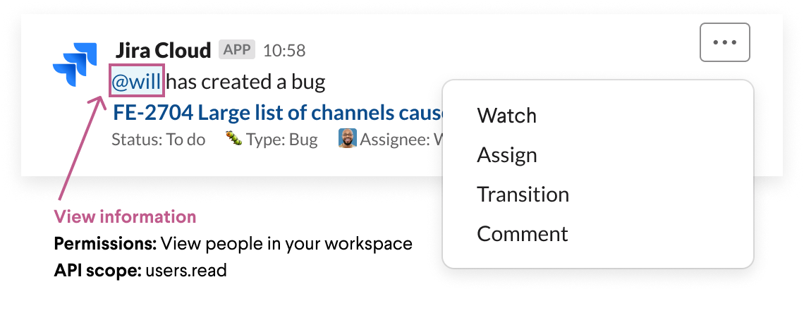

Apps help your team unlock productivity by making essential tools accessible in Slack where your team is already working. As an admin, your role is to balance giving employees the flexibility to use apps, while also maintaining control over how apps operate in the organisation.
To that end, we’ve compiled best practices for how to make it simpler and smoother for you to manage apps for your organisation securely and at scale.
Introduction to app management
Let’s start by breaking down app management into four steps:
- Requesting an app
- Approving or restricting an app
- Installing an app
- Authenticating your account with an app
For each of these steps, there are specific decisions that you can make to adjust app management to your organisation’s needs.
As we walk through each step, think about the type of governance that you want to apply to app management. Should decisions be made top-down, that is, set by org admins and owners to apply across all workspaces in the organisation?
Or is it better to have a bottom-up approach, so that workspace admins are responsible for making decisions for their respective workspaces?

Each organisation will have a different approach to decision making – so there’s no ‘right’ answer. In fact, many organisations use a hybrid approach where some decisions are made top-down and others are made bottoms-up.
Step 1: Requesting an app
Turning on app approvals is an important step to ensure that you have control over which apps are used in your organisation and, more importantly, what data becomes available to apps once they’re installed.
Turning on app approvals for a workspace
You can turn on app approvals for each workspace by going into the app management Settings. This is a bottom-up approach in that the workspace owners will turn on app approvals and choose whether they’d like to configure where app requests are sent. You can also designate team members to serve as app managers – people who have the ability to review app requests.

Turning on app approvals for an organisation
Org admins can add an organisation policy that automatically turns on app approvals for all existing workspaces and any workspaces created in the future.

Organisation policies allow you to make app management decisions that apply across all workspaces in the organisation. These policies act as safeguards to ensure that your workspaces are consistently following the same rules.
Step 2: Approving or restricting an app
Once app approvals are turned on, the next step in the app management process is approving or restricting an app. In order to create structure and add predictability to what apps get approved or restricted, it helps to take a step back and work as a team to translate internal security practices into guiding principles for why an app should get approved or rejected.
Each organisation will have different security practices and risk tolerance. By determining this information upfront, you can help set precedence for how apps operate in your organisation.
Evaluating Slack permissions
The first set of criteria that you can assess is what permissions the app is requesting to access in your Slack workspace. It’s important to understand the risks and benefits of allowing apps certain permissions – apps can transform workflows in your organisation, but it will come at the cost of sharing data.
Apps will request certain permissions to unlock the ability to do three things in Slack:
- View information
- Post information
- Perform actions
Let’s run through an example using the Jira Cloud app. Below is a conversation about an error being identified by the team. After Will logs the bug, the Jira Cloud app posts back into the channel so that the full team has visibility into the issue.

An app’s permissions are governed by API scopes and methods, which the app has access to. Let’s dissect what permissions and scopes are required in order for the Jira Cloud app to work.
- View information
The first set of permissions relates to viewing information. Here, the Jira Cloud app is specifying that it’s Will who created the bug. In order to do this, the app needs permissions to ‘view people in the workspace’ so that it can map their Slack user IDs back to their Jira user IDs.

By granting this permission, the Jira Cloud app makes it easy to quickly see who created a bug and send the user a follow-up message in Slack – no need to pull up Jira to search for those details.
- Post information
The second type of permission that an app will request is the ability to post information. The Jira Cloud app posts in channels, and in order to support this, the app needs permission to send messages as Jira Cloud.

By granting access to this permission, the Jira Cloud app pipes real-time notifications into a channel, giving the team visibility into bugs so that they can quickly respond to issues.
- Perform actions
Lastly, apps will request permission to perform a variety of actions in Slack. The Jira Cloud app allows users to take action from a notification, such as watching the issue or assigning it to someone.

By granting access to this permission, there’s no need to open Jira, search for an issue or assign it to a person – all of that can be done in a few clicks, directly in Slack.
A new granular model for Slack permissions
With this Jira example, you can start to see how certain permissions are fundamental for an app to function. However, sometimes an app requests a broader set of permissions – and those permissions don’t always clearly map to the functionality of the app. Rather, it seems like the app is requesting an unnecessary amount of data.
To address this concern, we launched a new granular permissions model, which enables app developers to request only the scopes their app needs to function.

As more app developers adopt the granular permissions model, you’ll notice that apps will start requesting a narrower set of permissions that map back to the app’s functionality, resulting in an altogether smaller security footprint.
As an admin or app manager, this should make the process of approving and restricting apps more transparent and specific, so it’s easier to evaluate apps for permissions that don’t meet your security standards and swiftly approve ones that are compliant.
Reviewing an app’s security details
In addition to permissions in Slack, admins also want to trust the app developer’s security practices. Developers can now feature their security and compliance details in a new tab in their App Directory listing, from SOC and HIPAA compliance certificates to data retention policies and more.

Instead of searching across disparate resources, you can access critical security and compliance details about an app in one place, directly from Slack’s App Directory.
Managing org-wide app approvals
The next natural question is how do you operationalise app approvals in a way that’s scalable and efficient? With Slack’s admin features, it’s simpler to manage app approvals at scale.
First, we have a new dashboard for org-wide app approvals built specifically for Enterprise Grid admins who are managing apps across multiple workspaces.
This dashboard is designed to streamline the process of reviewing app approvals, allowing admins to approve or restrict apps in bulk across the organisation.

This means that you can spend less time managing a queue of requests. Plus, you can maintain a bird’s-eye view of what apps are requested, restricted and approved across workspaces in one place – which is handy for checking that app management practices are enforced across the organisation.
Automating app approvals using Slack’s API
Some admins have more nuanced criteria for app approvals or simply want to further optimise the app approval process. The admin APIs for app management provide the infrastructure to build a custom app that automates parts (or all) of the app approval process.

Using Slack’s API, a developer can define criteria and set rules to automate app approvals and rejections across all workspaces in a Grid organisation.
Once you have that playbook of rules for app management for your org, Slack’s API will give you the ability to take action on those rules and architect a custom solution based on your org’s specific needs.
Not everyone will have resources internally to build a custom app. If you’re looking to hire a developer, we recently launched a new services partner programme with highly qualified companies that can help you build a solution with the APIs.
Step 3: Installing an app
Once an app is approved, the next step is installation. The user who submitted the original request will receive a message from Slackbot letting them know that the app is approved to be installed in the workspace that they requested. At this point, they’ll be directed to visit the App Directory to install the app on the requested workspace.
Installation flows will vary across apps – because each app requires a different combination of permissions and additional configuration for the app to get set up from end to end. There are two primary inputs that determine the installation flow:
- What access to data does the app need? Does it need access to data from Slack, data from the third-party service or both?
- What extra configuration does the app need? Are there additional steps to get the app set up in Slack, in the third-party service or both?
Let’s run through a few examples of each of these scenarios to help put these inputs in context.
Granting access to data
When it comes to what data is being accessed, some apps only need permissions from Slack to function. The app Simple Poll facilitates basic surveys and only really needs responses from users, which is data solely in Slack.

However, other apps will need third-party permissions from whatever service is being integrated. For example, the Google Calendar app needs access to a user’s calendar data in order for the app to perform its primary function – sending meeting reminders and syncing a user’s Slack status with their calendar.

Configuring an app
After granting permissions, the next step is completing any extra configuration. Not all apps require configuration, but for the apps that do, it’s typically because there’s some form of manual input required from the user. For example, if you’re using the Twitter app, you’ll need to configure what channel to post tweets in.

Other apps will require much more in-depth configuration from the third-party service, usually when there’s another app marketplace involved. For example, in order to install the Salesforce app, you’ll need to enlist the help of your Salesforce admin to take action from the Salesforce AppExchange and install the right Salesforce package.

It’s important to look out for this level of nuance because if you approve an app, it doesn’t mean it’s immediately working in Slack. When you’re reviewing an app request, look out for callouts that state that there’s additional configuration required – such as Salesforce, Workday or Zoom do, to name a few.
Step 4: Authenticating an app
Lastly, once an app is installed, it’s available for anyone in that workspace to discover. However, depending on the installation flow, some apps will require each individual user to run through an extra authentication step.
Specifically for apps that deal with user-level data, each user needs to grant the app permission to their individual account details by authenticating with the third-party service. This gives users the choice to share more personal data – such as calendar details – rather than having data automatically shared with the app.

Best practices from Slack’s security team
Now that you have a foundation for app management, here are a few practical tips and tricks from Slack’s security team:
Document guiding principles for app reviews
Work with your security team on determining guiding principles for why an app should get approved or rejected. Clear guardrails will empower admins and app managers to make smarter decisions about an app without needing to consult the team.
Educate your organisation about app requests
A great way to improve the quality of app requests is to create and socialise an FAQ document – because if people already know what they might or might not be allowed to install, you’ll get better requests.
For example, if you’ve decided to restrict any permissions as absolute no-gos, what are they? Let users know, and let them know why.
It’s also helpful to give guidelines about what they should look for when they’re considering apps. You might tell them about trusted developers that they can start with or specific apps that have already been restricted.
Drive discovery of approved apps
In order to reduce our threat surface, Slack’s security team tries to minimise the repetition of apps. For example, it might not be necessary to have three types of polling apps if each serves a similar use case.
We evaluate and identify an app that works best for a specific use case – then recommend to our employees to use that particular app (unless there’s a business need for a similar app).
We also find that users request apps because they’re searching for a solution and might not know what’s already available.
There’s now a dedicated Apps page – accessible from the sidebar right in Slack – where users can find apps that are already installed in their workspace. Direct users to this page and give them a chance to familiarise themselves with approved apps before requesting new ones.

More of an auditory learner? We’ve put together this content in the form of a webinar: Managing apps securely and at scale.
 Nice one!
Nice one!
Thanks a lot for your feedback!
Got it!
Thanks for your feedback.
Whoops! We’re having some problems. Please try again later.